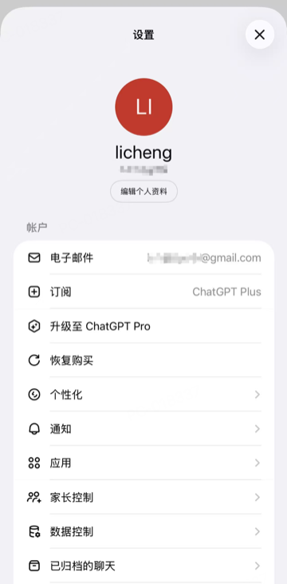
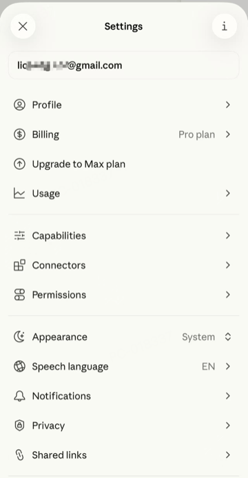

如何稳定订阅 Claude 和 ChatGPT
本文记录了我订阅 Claude Pro 和 ChatGPT Plus 的完整流程，核心思路是：用自建梯子保证 IP 稳定，用日区 Apple ID 完成支付。整个过程一次配好，基本可以长期免维护。
一、搭建稳定的专属梯子
为什么不用市售梯子？
市面上的梯子服务共享 IP 池，IP 质量参差不齐，极易被 Claude/OpenAI 检测并封锁账号。自建梯子虽然前期需要折腾一次，但 IP 完全自己掌控，稳定性更高。
我的方案：AWS Lightsail 云主机 + ShadowsocksR + BBR 加速，月费约 4～5 美元，用了三四年从未换过 IP。
Step 1：登录 AWS 国际站
访问 aws.amazon.com（注意：不是 AWS 中国站），注册或登录账号。

Step 2：创建 Lightsail 实例
进入 Lightsail 控制台，选择最便宜的套餐（$3.5 ~ $5/月），推荐选择东京节点，延迟更低。

Step 3：安装 ShadowsocksR 服务端
登录 Lightsail 实例后，使用以下脚本一键完成安装：
📦 脚本仓库：https://github.com/licheng-xd/gfw-ladder
将 ss.sh 和 bbr.sh 两个文件上传到服务器（最简单的方式是直接复制脚本内容，在服务器上用 vi 新建文件并粘贴），然后赋予执行权限：
1 | chmod +x *.sh |

切换到 root 账号：
1 | sudo -i |
安装 ShadowsocksR：
1 | ./ss.sh |
选择 ShadowsocksR，设置服务端口和密码。加密与混淆参数可自行选择，我的配置如下：
| 参数 | 值 |
|---|---|
| 加密方式 | aes-256-cfb |
| 混淆方式 | tls1.2_ticket_auth |
| 协议 | tls1.2_ticket_auth |
开启 BBR TCP 加速：
1 | ./bbr.sh |
全部选择默认即可，加速效果明显。
Step 4：安装 Shadowrocket 客户端
Shadowrocket（小火箭）在非大陆区 App Store 均可下载，价格约 30 港币，支持 Mac 和 iPhone 同时使用，买一次终生可用。
安装完成后，添加新节点，填写以下信息：
- 服务器地址：Lightsail 实例的公网 IP（非内网 IP）
- 端口 / 密码 / 加密方式：与 Step 3 中设置保持一致
配置完成后测试连接速度，梯子即搭建成功。


Step 5：IP 被封时如何处理？
加上混淆算法后，IP 被封的概率极低（我三四年未换过）。万一遇到 IP 被封的情况，处理方式非常简单：
- 在 Lightsail 控制台重启实例，系统会自动分配新的公网 IP
- 在 Shadowrocket 的节点配置中，将服务器地址更新为新 IP
整个过程 5 分钟内完成。
二、注册日区 Apple ID 并完成订阅
Claude 和 ChatGPT 的移动端订阅均通过 App Store 内购完成，需要一个非大陆区的 Apple ID。推荐使用日区，礼品卡购买便捷，且支持人民币购买。
Step 1：注册日区 Apple ID
网上教程较多，此处不再赘述，搜索「日区 Apple ID 注册」按教程操作即可。
Step 2：购买并兑换礼品卡
前往苹果日本官网购买礼品卡：
🔗 https://www.apple.com/jp/shop/buy-giftcard/giftcard/10000%E5%86%86
根据需要选择面额，购买后兑换码会发送至邮箱。看不懂日文没关系，用 Chrome 打开邮件直接翻译即可。

Step 3：等待 48 小时风控期
苹果对新账号有 48 小时支付风控期，期间无法使用 Apple Pay 内购。
若 48 小时后仍无法支付，可联系苹果客服（在线聊天即可），说明情况，客服会转接国际客服进行人工确认，解除风控。
Step 4：订阅 Claude Pro 和 ChatGPT Plus
风控解除后，在手机 App 内即可正常订阅。建议先从基础套餐（ChatGPT Plus / Claude Pro）开始体验，确认使用需求后再考虑升级更高套餐。


小结
| 环节 | 工具 | 费用 |
|---|---|---|
| 梯子 | AWS Lightsail + ShadowsocksR | ~$5/月 |
| 客户端 | Shadowrocket | ~¥30（一次性） |
| 支付方式 | 日区 Apple ID + 礼品卡 | 按需购买 |
| 订阅 | ChatGPT Plus / Claude Pro | 按套餐定价 |
整套方案初次配置约需 1～2 小时，之后基本免维护，是目前最稳定的订阅方式之一。